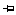
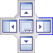
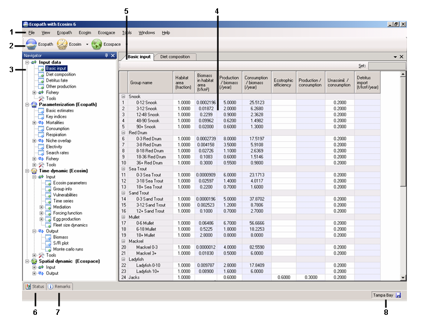

5.6 General features of the Graphic User Interface
EwE 6.0 has a markedly different look to any previous version of EwE, representing much improved navigability of the software. After opening an EwE model, you will see an interface similar to that shown in Figure 5.1, consisting of:
1. Menu bar
2. Shortcut buttons
3. Navigator window
4. Main screen
5. Tabs bar
6. Status tab
7. Remarks tab
8. Status bar
Note: click on Basic input on the Navigator window to see the Ecopath model groups.
All input and output forms are listed in a nested directory in the Navigator window (see section below), enabling users to move intuitively through the steps of building and using a model. A key feature of the Graphic User Interface (GUI) is the ability to select forms from the Navigator window and display them as tabulated windows on the Tabs bar. This allows you to switch easily among forms in current use.
Users can change the look of the GUI using a number of features available on the Tools menu. In addition, any of the windows in the GUI can be hidden or visible, docked (locked in place) or floating, or can be docked to new locations. Floating windows are a particularly useful feature for users with multiple monitors as one form can be edited whilst referring to others.
A window can be switched from visible to hidden mode using the push pin icon (AutoHide) on its title bar. To switch from visible to hidden mode, click on the vertical AutoHide icon ( ) then move your mouse away from the window and click elsewhere on the screen. It will be hidden and a tab will appear that gives you access to the hidden window. To view the window temporarily click on the tab. To switch back to visible mode, click on the horizontal push pin icon (
) then move your mouse away from the window and click elsewhere on the screen. It will be hidden and a tab will appear that gives you access to the hidden window. To view the window temporarily click on the tab. To switch back to visible mode, click on the horizontal push pin icon (

) whilst viewing the window.
Any window that is in visible mode () can be moved to a floating window or docked to a new location. To move a window, click on the title bar at the top of the window (or its tab if it is on the Tabs bar) and move the mouse whilst holding down the left mouse button. A transparent blue box and a set of window dropper icons will appear (e.g., ). To move to a floating window, drop the box anywhere on the screen except on the dropper icons. To move to a new docked location, position the mouse over the dropper icon where you would like to dock the window and release the mouse button. Use the centre docking icon (

) to lock a window to the Tabs bar.
If you have checked “Save window layout” on the Tools menu, changes in layout will be preserved next time you open the model.

Figure 5.1. EwE 6.0 user interface, showing the basic parameter input screen. Numbers refer to the features listed at the beginning of Section 2.2.
1. Menu bar
The Menu bar contains the File, View, Ecopath, Ecosim, Ecospace, Tools, Windows and Help menus, allowing users to open, close and save models, set preferences and access Help files. This section details the menu options available on the menu bar, including instructions for opening, closing and saving models and for setting your preferences and getting help.
2. Shortcut buttons
The Ecopath, Ecosim and Ecospace shortcut buttons provide quick access to existing Ecopath models and Ecosim and Ecospace scenarios.
3. Navigator window
The Navigator window is the main navigation tool in EwE 6.0. Expanding menus provide access to all the features of Ecopath, Ecosim and Ecospace. Clicking on menu items (e.g., Basic input or Diet composition) displays these items in the Main Screen where they can be viewed and edited.
To make navigation easier, the menu nodes in the Navigator window are color coded. Green coded nodes open input forms (forms where you enter data). Blue coded nodes open output forms (forms where model results are displayed in the form of tables or graphs). Menu nodes with a “+” icon can be expanded to reveal more nodes.
Close the Navigator window by unchecking the Navigator option on the View menu or by clicking the close button at the top of the bar. The Navigator window can be hidden using the AutoHide button () on the title bar (see General features of the Graphic User Interface above). Note that you must click elsewhere on the screen before the Navigator window will disappear.
4. Main screen
The Main screen shows the forms where Ecopath, Ecosim and Ecospace model inputs are entered and edited. Model results are also displayed here. Note that nothing is displayed in the Main screen until a menu item is selected on the Navigator window. Once an item has been selected (e.g., Basic input table) it is added as a tab to the Tabs bar so that you can easily return to it after other items have been displayed.
General note about input forms. All input forms (coded with a green arrow in the Navigator window) have a Set box in the top right corner for entering values into multiple cells. For example, you may wish to enter the same value of a parameter for several groups at once. Highlight the cells for the groups you wish to have the same value and type it into the Set box. Note that you can only do this for one model variable at a time.
5. Tabs bar
The Tabs bar provides an easy means of switching between model forms. Tabs are added as they are selected on the Navigator window, enabling easy movement among forms currently in use. You can view forms simply by clicking on the tabs or by selecting them from the list under the down arrow on the right hand side of the toolbar. You can also select a form to display by checking it in the Windows menu.
The current form can be closed using the close button at the end of the Tab bar or by using the Close option on the Windows menu. You can close all open forms using the Close All Tabs option on the Windows menu.
Any form can be dragged and dropped to a floating window or docked to a new position by dragging it by the tab whilst holding down the left mouse button (see General features of the Graphic User Interface above).
6. Remarks tab
Many of the input tables allow you to enter comments and extra information about the data that have been entered.
To add a comment, select the desired cell and click on the Remarks tab to open the Remarks window. Remarks can then be entered or edited here. Remarks can be viewed later by holding your mouse over commented cells (marked with a flag in the corner) or by selecting the commented cell and clicking on the remarks button. Note, if no cell is selected, a “No selection” message will be displayed in the Remarks window. The Remarks window can be switched to visible mode by clicking on the horizontal push pin icon () whilst the window is open.
7. Status tab/Status panel
EwE 6.0 keeps a log of model actions in the Status panel, which opens when you pass your mouse over the Status tab. The Status panel can be switched to visible mode by clicking on the horizontal push pin icon () whilst the window is open.
Three types of message are displayed in the Status panel:
Information messages [ ]. Information messages provide feedback on regular events in EwE. Information events are confirmations of things that went well. Examples are opening the model; successful edits; and successful balancing (i.e., parameterization) of the model. Clicking and holding the mouse button over each message highlights the relevant cells in red [ ].
]. Information messages provide feedback on regular events in EwE. Information events are confirmations of things that went well. Examples are opening the model; successful edits; and successful balancing (i.e., parameterization) of the model. Clicking and holding the mouse button over each message highlights the relevant cells in red [ ].
Warning messages [ ]. Warnings occur when EwE was not able to complete an action and requires the user to fix a problem, usually with the input data. For example, one of the most important of these is when parameterization fails (i..e., the model fails to balance). When this occurs, you will get the message “Your model is NOT balanced! Computed Ecotrophic Efficiencies (EE) invalid for one or more group(s).” Clicking on the “+” icon next to this message expands the message to show which groups are causing the problem. Clicking and holding the mouse button over each warning message highlights the problem cells in red [ ]*
]. Warnings occur when EwE was not able to complete an action and requires the user to fix a problem, usually with the input data. For example, one of the most important of these is when parameterization fails (i..e., the model fails to balance). When this occurs, you will get the message “Your model is NOT balanced! Computed Ecotrophic Efficiencies (EE) invalid for one or more group(s).” Clicking on the “+” icon next to this message expands the message to show which groups are causing the problem. Clicking and holding the mouse button over each warning message highlights the problem cells in red [ ]*
Critical messages []. Critical messages are very rare and should not be encountered during normal use of the software. Users encountering critical messages should try closing and re-opening the program. If the problem persists, please contact us through www.ecopath.org.
You can clear one or all messages in the status panel by right clicking on the message or panel.
*See Ecopath parameterization for important information about parameterizing Ecopath models. You should not proceed to Ecosim or Ecospace before the model is successfully parameterized.
8. Status bar
The Status bar displays the name of the active model. If unsaved changes have been made to the model, a save icon appears to remind you to save your model. The Status bar can be switched off by unchecking the Status Bar option on the View menu.